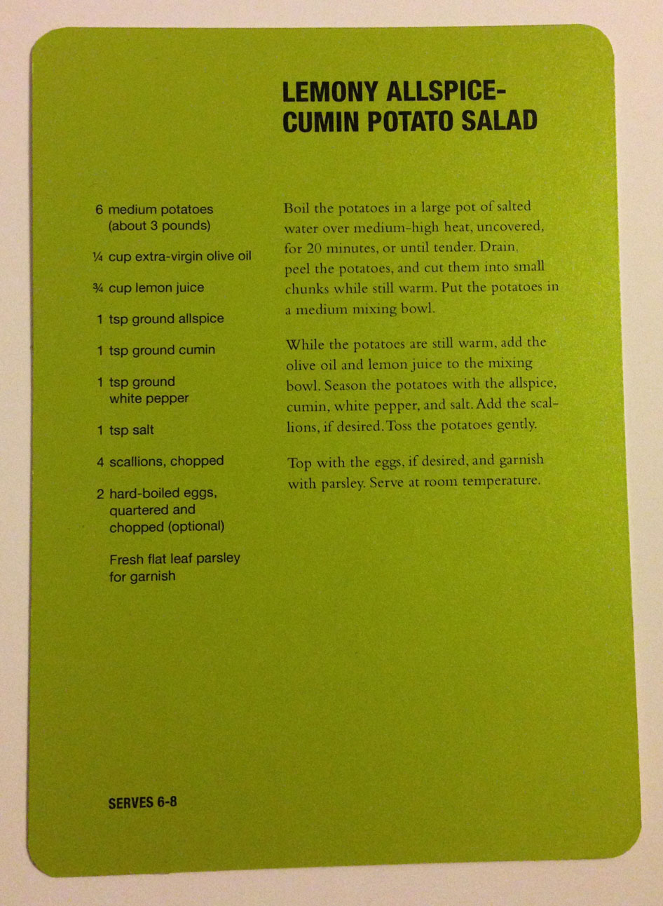

LEMONY ALLSPICE-CUMIN POTATO SALAD
- 6 medium potatoes (about 3 pounds)
- 1/4 cup extra-virgin olive oil
- 3/4 cup lemon juice
- 1 tsp ground allspice
- 1 tsp ground cumin
- 1 tsp ground white pepper
- 1 tsp salt
- 4 scallions, chopped
- 2 hard-boiled eggs, qautered and chopped (optional)
- Fresh flat leaf peasley for ganish